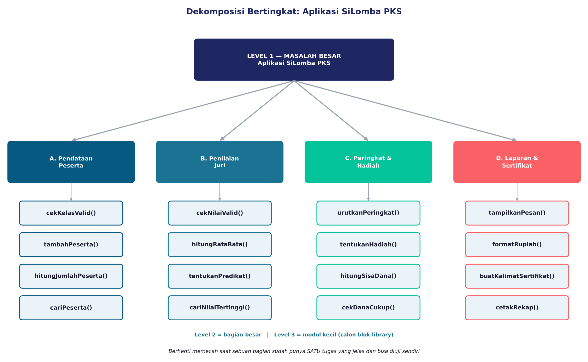
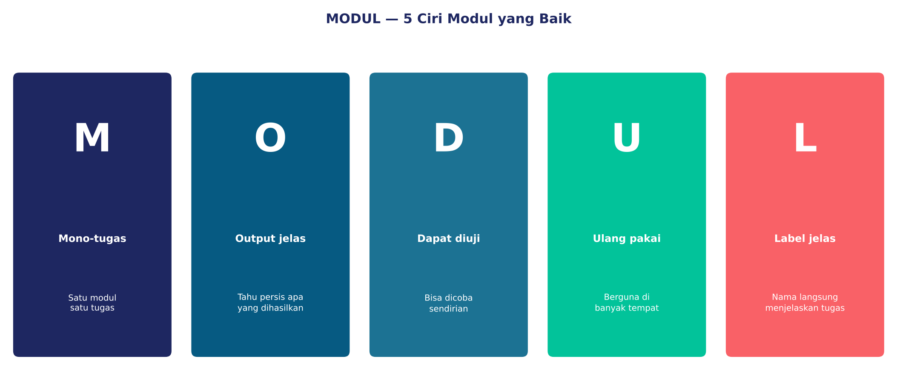
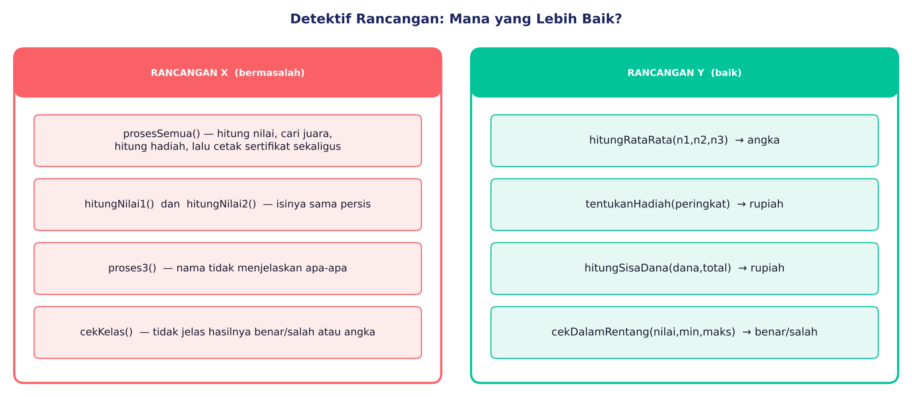
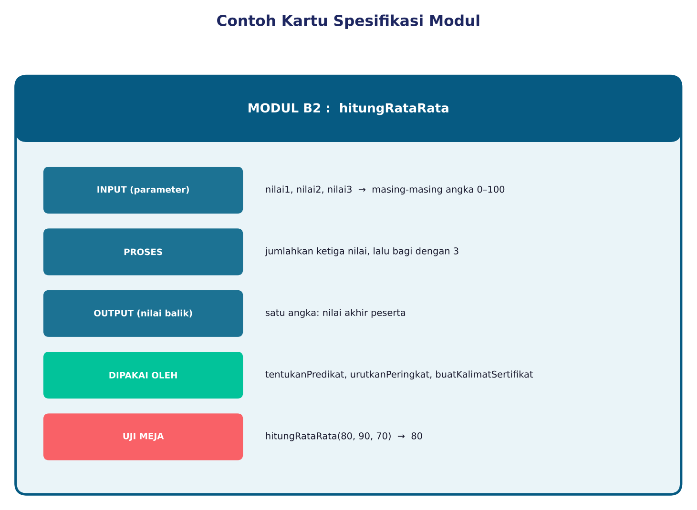
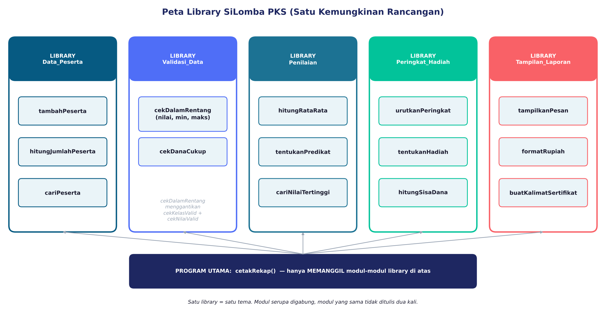

1. Tantangan Panitia
Pada pertemuan pertama kamu sudah kenal dekomposisi dan library. Kali ini panitia PKS membuat aplikasi SiLomba PKS untuk Lomba Poster Digital:
- mendata peserta (hanya kelas 7, 8, 9);
- menerima nilai 3 juri (0–100), menghitung nilai akhir dan predikat;
- menentukan peringkat, hadiah Rp300.000 / 200.000 / 100.000 dari dana Rp1.000.000;
- mencetak sertifikat dan rekap.
2. Dekomposisi Bertingkat
Pecah masalah besar → bagian → modul kecil. Berhenti memecah ketika sebuah bagian sudah punya satu tugas yang jelas dan bisa diuji sendiri.

Gambar 1. Tiga tingkat dekomposisi SiLomba PKS
3. Lima Ciri Modul yang Baik: MODUL

Gambar 2. Singkatan MODUL sebagai daftar periksa
Satu modul, satu tugas.
Hasilnya jelas: angka, teks, atau benar/salah.
Bisa dicoba dengan data contoh.
Tidak ada modul kembar.
Nama menjelaskan tugas.
4. Detektif Rancangan
Untuk tiap modul di bawah, tentukan: apakah sudah baik, atau melanggar ciri yang mana? Klik satu jawaban.

Gambar 3. Rancangan X (bermasalah) dan Y (baik)
5. Kartu Spesifikasi dan Uji Meja
Kartu spesifikasi berisi: nama, input (parameter), proses, output (nilai balik), dipakai oleh, dan uji meja.

Gambar 4. Contoh kartu spesifikasi
Simulator Uji Meja
Pilih modul, isi data, lalu tebak dulu hasilnya sebelum menekan “Jalankan”. Cobalah data biasa, nilai batas, dan data salah!
6. Susun Library Bertema
Hasil dekomposisi digabung: modul yang serupa dijadikan satu. cekKelasValid (7–9) dan cekNilaiValid (0–100) sama-sama bertanya “apakah angka ada di dalam rentang?”. Keduanya cukup diganti cekDalamRentang(nilai, min, maks).
Sekarang tempatkan setiap modul ke library yang paling cocok.

Gambar 5. Satu kemungkinan peta library (rancanganmu boleh berbeda bila alasannya kuat)
7. Mana yang Dibuat Duluan?
Modul yang dipanggil harus dibuat dan diuji lebih dulu daripada modul yang memanggil. Aturan panggilan: tambahPeserta memanggil cekDalamRentang; cetakRekap memanggil semua modul lain; buatKalimatSertifikat dan hitungRataRata tidak memanggil modul lain. Urutkan dengan tombol ▲ ▼.